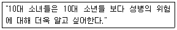
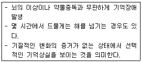
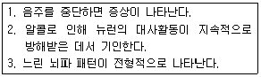
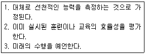
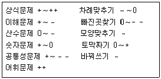
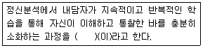
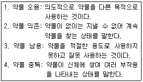

임상심리사-2급 (2003-08-10 기출문제)
1과목: 심리학개론
1. 도박이나 복권의 경우처럼 높은 반응률로 지속적인 반응을 이끌어내는 강화계획은?
- 고정간격계획
- 고정비율계획
- 변화간격계획
- 변화비율계획
(정답률: 83%)

2. 다음 중 사례연구의 장단점을 잘못 설명한 것은?
- 사례연구에서는 여러 가지 자료수집 방법을 사용할 수 있다.
- 심리적인 문제를 진단하고 치료하는 상담 및 임상심리학자들이 자주 사용하는 방법이다.
- 한 사람에 대한 전기를 재구성하는 과정으로 볼 수 있다.
- 다른 연구법에 비해 연구자의 주관적 기대와 주관이 개입될 경우가 적다.
(정답률: 75%)
3. 다음 중 Erikson의 발달단계에 대한 설명으로 틀린 것은?
- 초기경험이 성격발달에 중요하다.
- 사회성발달을 강조한다.
- 전생애를 통해 발달한다.
- 성격은 각 단계에서 경험하는 위기의 극복양상에 따라 결정된다.
(정답률: 75%)
4. 부모나 친구 혹은 영화배우 등의 행동을 본뜸으로써 학습하게 되는 것을 무엇이라고 하는가?
- 역조건형성
- 고전적 조건형성
- 조작적 조건형성
- 관찰학습
(정답률: 88%)
5. 얼마간의 휴식기간을 가진 후에 소거된 반응이 다시 나타나는 현상을 무엇이라고 하는가?
- 자극 일반화
- 자발적 회복
- 변별 조건형성
- 고차 조건형성
(정답률: 92%)
6. Watson이 실시한 Albert의 공포 형성 실험이 주는 시사점이 아닌 것은?
- 행동과 성격은 학습의 결과이다.
- 성격은 개인의 잠재적인 기질이다.
- 자극의 일반화 현상이 작용한다.
- 성격의 변화도 역시 학습이다.
(정답률: 77%)
7. 사람들에게 어떤 집에 관한 기술을, 한 집단은 주택구매자의 입장에서, 다른 집단에게는 도둑의 입장에서 읽게한 후 나중에 그 글에 대한 회상을 살펴보니 두 집단 간에 현저한 차이가 발생했다. 이 현상을 가장 잘 설명할 수 있는 인지 개념은?
- 도식(schema)
- 저장(storage)
- 회상(recall)
- 망각(forgetting)
(정답률: 86%)
8. 효과적인 처벌의 사용방법이 아닌 것은?
- 처벌은 시간을 두고 주는 것이 효과적이다.
- 반응이 나올 때마다 매번 처벌을 주는 것이 효과적이다.
- 처음부터 아주 강한 강도의 처벌이 효과적이다.
- 처벌행동에 대해 대안적 행동이 있을 때 효과적이다.
(정답률: 63%)
9. 하향적 처리(top-down processing)의 영향을 받는 기억현상과 관련이 없는 것은?
- 진행성 기억상실
- 스키마
- 스크립트
- 유도질문
(정답률: 49%)
10. 귀인과정에서 사용하는 정보가 아닌 것은?
- 항상성 정보
- 독특성 정보
- 상보성 정보
- 동의성 정보
(정답률: 57%)
11. 인지적 일관성 이론의 설명으로 적합한 것은?
- 사람들은 신념, 태도, 행동의 일관성을 추구한다.
- 신념과 행동이 서로 불일치하는 경우 신념에 맞게 행동을 바꾼다.
- 태도와 행동이 서로 불일치하는 경우 태도에 맞게 행동을 바꾼다.
- 태도와 신념이 서로 불일치하는 경우 신념에 맞게 태도를 바꾼다.
(정답률: 83%)
12. 켈리(Kelly)의 공변모형에 의하면 사람들은 세 가지 정보를 검토하여 외부귀인하거나 내부귀인한다고 한다. 이 세 가지 정보에 해당하지 않는 것은?
- 일관성 (consistency)
- 특이성 (distinctiveness)
- 현저성 (salience)
- 동의성 (consensus)
(정답률: 62%)
13. 과자의 양이 적다는 어린 꼬마에게 모양을 다르게 했더니 많다고 좋아한다. 그 아이의 논리적 사고를 피아제(Piaget) 이론으로 본다면 다음의 문제 중 어디에 속하는 가?
- 자기중심성의 문제
- 대상연속성의 문제
- 보존개념의 문제
- 가설-연역적 추론의 문제
(정답률: 83%)
14. 분실 휴대폰을 찾아주며 보상을 요구하는 사람이 있다. 이 사람은 콜버그(K梗hlberg)의 도덕발달 수준 중 어디에 속하는가?
- 인습이전 수준
- 인습수준
- 사회계약 지향
- 보편적 도덕원리 지향
(정답률: 63%)
15. Cattell의 성격이론에 대한 설명 중 틀린 것은?
- 성격요인을 규명하는데 요인분석을 주로 사용하였다.
- 지능을 성격의 한 요인인 능력특질로 보았다.
- 특질(trait)의 분류방식 중 표면특질과 근원특질이 중요하다.
- 성격을 구성하는 행위와 성향들이 서열적으로 조직화 되어 있다고 본다.
(정답률: 75%)
16. 다음의 가설 중에서 종속변수에 해당하는 것은?

- 10대 소녀와 소년
- 성병에 대한 지식추구 정도
- 호기심의 정도
- 성별의 차이
(정답률: 60%)
17. 범죄자를 추적하는 추적견을 훈련시키거나 써커스에서 탁구를 하는 비둘기 등의 동물을 훈련시킬 때 사용되는 도구적 조건형성과정의 방법은?
- 조성(shaping)
- 미신행동(superstition)
- 조건강화(conditioned reinforcer)
- 강화계획(reinforcement schedule)
(정답률: 55%)
18. 인본주의적 성격 심리학자였던 Maslow가 언급한 욕구 단계에서 최상 단계에 해당하는 것은?
- 생리적 욕구
- 자아실현 욕구
- 존중의 욕구
- 심미적 욕구
(정답률: 89%)
19. 타인의 어떤 행위에 대한 원인을 찾을 때 그 사람이 처했던 외부적 상황 요인을 과소평가하는 경향은 무엇인가?
- 기본적 귀인오류
- 이타적 행위
- 방관자 효과
- 사회 압력
(정답률: 73%)
20. 다음 중 발달과 관련된 유전-환경의 논쟁 중 환경을 가장 강조하는 관점은?
- 정신분석학적 관점
- 행동주의적 관점
- 구조주의적 관점
- 생물학적 관점
(정답률: 64%)
2과목: 이상심리학
21. 다음 보기는 해리성 장애의 어떤 분류에 해당되는가 ?(오류 신고가 접수된 문제입니다. 반드시 정답과 해설을 확인하시기 바랍니다.)

- 해리성 둔주(dissociative fugue)
- 해리성 정체감장애(dissociative identity disorder)
- 이인증(depersonalization)
- 해리성 기억상실증(dissociative amnesia)
(정답률: 34%)
22. 다음 중 불안에 대한 설명으로 맞는 것은?
- 객관적으로 경험되는 불쾌한 정서이다.
- 환경에 적응하기 위한 생체의 기본적 반응 양식이다.
- 걱정의 원인이 분명하다.
- 생리적 각성은 일어나지 않는다.
(정답률: 67%)
23. 다음 중 자기애성 성격장애(narcissistic personalitydisorder)의 특징을 바르게 설명한 것은?
- 타인회피, 부끄러움, 무관심
- 다양하며 모호한 신체증상 호소
- 자기중심, 성공에 대한 환상
- 자기확신의 결여, 고독에 대한 불안감
(정답률: 88%)
24. 정신분열증의 하위유형으로 적절하지 않은 것은?
- 파괴형
- 긴장형
- 복잡형
- 편집형
(정답률: 40%)
25. DSM-IV에서 성격장애를 몇 개의 군으로 나누고 있다. 극적이고 감정적이며 변덕스럽고 충동적인 행동을 주 특징으로 하는 군에 해당되지 않는 것은?
- 반사회성 성격장애
- 의존성 성격장애
- 히스테리성 성격장애
- 자기애성 성격장애
(정답률: 60%)
26. 대형화재현장에서 살아 남은 남성이 불이나는 장면에 극심하게 불안증상을 느낄 때 의심할 수 있는 가장 가능성이 높은 장애는?
- 외상후 스트레스 장애
- 과대망상증
- 정신분열증
- 조증
(정답률: 95%)
27. 주의력결핍-과잉행동장애(A-D/HD)에 대한 설명으로 틀린것은?
- 과제나 활동을 체계화하는데 어려움을 보여 정신적 노력이 요구되는 상황에서 증상이 두드러지게 나타난다.
- 학령기에 학습장애, 불안장애, 기분장애, 의사소통장애 유병율이 높다.
- DSM-Ⅳ기준에 의하면 증상이 학교에서만 나타나도 진단을 내릴 수 있다.
- 충동성이나 부주의 증상이 7세 이전에 발생해야 한다
(정답률: 68%)
28. 주요 우울장애 환자가 일반적으로 나타내는 특징적 증상이 아닌 것은?
- 주의의 산만성
- 부정적 자기 개념
- 정신운동성 지체
- 일상활동에서의 흥미와 즐거움의 상실
(정답률: 91%)
29. 정신분열증을 설명하는 소인-스트레스(diathesis-stresstheory)이론이란?
- 소인이 스트레스를 야기한다.
- 스트레스가 소인을 변화시킨다.
- 소인과 스트레스는 서로 억제한다.
- 소인은 스트레스 상황에서 발현된다.
(정답률: 89%)
30. 반사회성 인격장애(antisocial personality disorder)의 진단기준이 아닌 것은?
- 18세 이상이어야 반사회성 인격장애의 진단이 내려질 수 있다.
- 7세 이전에 품행장애의 증거가 있어야 한다.
- 사회적 규범을 지키지 못한다.
- 충동성과 무계획성을 보인다.
(정답률: 74%)
31. 다음 학습장애에 대한 설명으로 틀린 것은?
- 이 장애는 쓰기, 읽기, 산술 등의 수행이 개별적으로 시행된 표준화 검사에서 나이, 학교교육, 그리고 지능에 비해서 기대되는 수준보다 성적이 현저하게 낮을 때 진단된다.
- 수행이 현저하게 낮다는 것은 표준화 검사성적과 지능지수사이에 1 표준편차 이상 차이날 때로 보통 정의된다.
- 산술장애와 쓰기장애는 흔히 읽기 장애와 동반되어 나타난다.
- 한 가지 이상의 학습장애의 진단 기준이 맞는다면 해당되는 학습장애 모두를 진단내려야 한다.
(정답률: 25%)
32. 다음 중 DSM-IV의 학습장애로 볼 수 없는 것은?
- 기능성 난청장애
- 읽기장애
- 산술장애
- 쓰기장애
(정답률: 88%)
33. 4세 아동 A는 어머니와 애정적 관계를 형성하지 못하며, 장난감을 가지고 노는 데는 흥미가 없고 사물을 일렬로 배열하거나 자신의 몸을 앞뒤로 흔들면서 알 수 없는 말을 한다. 아동 A에게 진단할 수 있는 가장 가능성이 높은 장애는?
- 자폐성 장애(autistic disorder)
- 정신지체(mental retardation)
- 틱 장애(tic disorder)
- 학습장애(learning disorder)
(정답률: 90%)
34. 편집성 성격장애의 특징적인 증상은?
- 의심
- 과대 망상
- 정서의 변동
- 정서적 무관심
(정답률: 77%)
35. 치매(Dementia)의 특성에 대한 설명으로 맞는 것은?
- 일반적으로 과거에 관한 기억장애만을 가지고 있다.
- 현저한 지적 능력의 상실이 있다.
- 기질적 장애 없이 나타나는 정신병적 상태이다.
- 치매의 증상은 갑자기 나타난다.
(정답률: 69%)
36. 조증 삽화나 혼재성 삽화는 한 번도 없었고, 한 번 이상의 주요 우울증 삽화와 경조증 삽화가 있을 때 진단하게 되는 기분장애는?
- 순환성 장애
- 기분부전장애
- 양극성 장애 Ⅰ
- 양극성 장애 Ⅱ
(정답률: 52%)
37. 치매를 유발할 수 있는 요인이 아닌 것은?
- 알츠하이머(Alzheimer)질환
- 다발성 경색증
- 고열과 패혈증을 동반한 전신성 감염
- 뇌조직의 점진적인 수축
(정답률: 82%)
38. 다음 진전섬망(delirium tremens : DT)에 대한 설명 중 맞는 것은?

- 1
- 1, 2
- 1, 3
- 1, 2, 3
(정답률: 70%)
39. 다음 중 정신분열병의 양성 증상이 아닌 것은?
- 양성 증상은 정상적인 기능의 왜곡 또는 과잉을 의미한다.
- 대표적으로 망상이나 환각을 들 수 있다.
- 동기와 즐거움의 상실 등이 여기에 속한다.
- 혼란된 행동과 기괴한 행동이 여기에 속한다.
(정답률: 78%)
40. 소아기 자폐증의 임상양상에 대한 설명으로 틀린 것은?
- 눈맞춤이 잘 이루어지지 않는다.
- 자폐아들도 생후 2-3개월이 되면 주변 사람들의 자극에 대해서 웃는 반응을 보인다.
- 자폐아동들은 부모와의 애착이 결여되어 있다.
- 자폐아동은 의사소통상의 결함을 보인다.
(정답률: 86%)
3과목: 심리검사
41. 개인지능검사 중 동작성 검사의 순서로 올바른 것은 ?
- 빠진곳 찾기 → 차례 맞추기 → 토막짜기 → 모양맞추기 → 바꿔쓰기
- 빠진곳 찾기 → 모양맞추기 → 차례 맞추기 → 토막짜기 → 바꿔쓰기
- 바꿔쓰기 → 빠진곳 찾기 → 차례 맞추기 → 토막짜기 → 모양맞추기
- 모양맞추기 → 바꿔쓰기 → 빠진곳 찾기 → 차례 맞추기 → 토막짜기
(정답률: 58%)
42. MMPI 타당도 척도에 대한 설명으로 틀린 것은?
- 무반응점수(?)에서 높은 점수가 검사의 후반부 문항에서 응답하지 않은 것 때문이라면 임상 척도에 미치는 영향이 그리 크지 않다.
- 허위척도(L)는 자신을 좋게 보이려고 다소 고의적으로 사소한 단점마저도 부인하는 세련되지 못한 방어를 평가한다.
- 신뢰성점수(F)가 65 T인 사람은 고의적으로 나쁘게 왜곡하여 대답했을 가능성이 있다.
- 교정척도(K)는 방어성과 경계심을 평가한다.
(정답률: 43%)
43. 다음 중 집중력과 정신적 추적능력(mental tracking)을 측정하는데 흔히 사용되는 신경심리검사는?
- Bender Gestalt Test
- Rey Complex Figure Test
- Trail Making Test
- Wisconsin Card Sorting Test
(정답률: 70%)
44. 다음 중 적성검사의 특징에 해당되는 것은 ?

- 1, 2
- 2, 3
- 1, 3
- 1, 2, 3
(정답률: 44%)
45. 특정 학업과정이나 직업에 대한 앞으로의 수행능력이나 적응을 예측하는 검사는?
- 적성검사
- 지능검사
- 성격검사
- 능력검사
(정답률: 75%)
46. 피검자가 매우 피곤하고 불안한 상태에서 웩슬러 지능 검사를 실시할 경우에, 가장 부정적인 영향을 받을 가능성이 높은 검사는 무엇인가?
- 토막짜기-어휘문제
- 숫자문제- 공통성 문제
- 기본지식-바꿔쓰기
- 산수문제- 바꿔쓰기
(정답률: 75%)
47. 영아용 발달척도 중에서 여러 가지로 우수하다는 평가를 받고 있으며, 널리 활용되는 도구는 베일리 유아발달척도이다. 베일리 척도에 대한 설명으로 맞지 않는 것은?
- 정상발달로부터의 이탈여부 및 이탈정도를 파악하기 위해서 고안되었다.
- 영아의 능력은 분명히 구별되는 여러 가지 요인으로 구성되어 있다는 가정에 근거한다.
- 개정된 베일리 척도는 1개월에서 42개월까지의 영아를 대상으로 사용할 수 있다.
- 발달지수는 평균이 100, 표준편차가 16인 일종의 정상화된 표준점수이다.
(정답률: 44%)
48. 한국판 웩슬러 지능검사(K-WAIS)의 특징에 대한 설명으로 틀린 것은 ?
- 성인용 지능검사이나 중· 고· 대학생에게도 사용할 수 있다.
- 편차지능점수(Deviation IQ)를 사용하였다.
- 개인검사가 아니라 집단검사이다.
- 모든 문제를 구두나 동작으로 제시해 주고 결과도 검사자가 직접 기록함으로써 문맹자에게도 검사를 해줄 수 있다.
(정답률: 64%)
49. 뇌손상이 있을 때 흔히 나타나는 기능장애는 기억장애이다. 뇌손상에 의해 유발된 기억장애에 대한 설명으로 맞지 않는 것은?
- 대부분의 경우에 정신성 운동속도의 손상이 수반된다
- 장기기억보다 최근 기억이 더 손상된다.
- 일차기억은 비교적 잘 유지된다.
- 진행성 장애의 초기징후로 나타나기도 한다.
(정답률: 30%)
50. 표준화검사가 다른 검사에 비하여 객관적인 해석을 가능하게 해주는 이유는?
- 타당도가 높기 때문이다.
- 규준이 확보되어 있기 때문이다.
- 신뢰도가 높기 때문이다.
- 실시가 용이하기 때문이다.
(정답률: 77%)
51. 한 아동이 웩슬러 아동용 지능검사에서 VIQ 125, PIQ 100, FIQ 115를 얻었다. 이 결과에 대한 해석적인 가설이될 수 있는 것은 ?
- 상대적으로 우수한 실행능력
- 열악한 초기 환경
- 학습부진
- 우울증상
(정답률: 49%)
52. 다음 중 동일한 검사를 동일한 피검자 집단에 일정 시간간격을 두고 두 번 실시하여 얻은 두 검사 점수의 상관계 수에 의하여 신뢰도를 측정하는 방법은 무엇인가?
- 동형검사 신뢰도
- 재검사 신뢰도
- 반분검사 신뢰도
- 문항 내적 일관성 신뢰도
(정답률: 65%)
53. 지능의 일반적인 정의에 해당되지 않는 것은?
- 지능이란 적응력이다.
- 지능이란 학습 능력이다.
- 지능이란 추상적인 사고 능력을 포함한다.
- 지능이란 문자나 숫자를 기억하는 능력이다.
(정답률: 49%)
54. 심리검사에서 원점수란 실시한 심리검사를 채점해서 얻는 최초의 점수를 말하는데, 이 원점수에 대한 설명이 틀린것은?
- 원점수는 그 자체로는 거의 아무런 정보를 주지 못한다.
- 원점수는 기준점이 없기 때문에 특정 점수의 크기를 표현하기 어렵다.
- 원점수는 척도의 종류로 볼 때 등간척도에 불과할 뿐 사실상 서열척도가 아니다.
- 원점수는 서로 다른 검사의 결과를 동등하게 비교 할 수 없다.
(정답률: 49%)
55. 정신과에 내원한 환자에게 MMPI를 실시하도록 하여 채점 하였더니 L, K 척도는 40점 이하, F척도는 80점 이상으로 나왔다. 이 피검사자가 보일 수 있는 문제 중에 적합하지 않은 것은?
- 두뇌손상으로 인해 정서적 문제를 심하게 겪고 있는 경우
- 자아정체 위기를 겪고 있는 청소년
- 외견상 잘 나타나지 않으나 사고장애를 가진 환자
- 사고후 보상을 받기 위해 증상을 과장하는 교통사고 환자
(정답률: 38%)
56. 다음 중 미네소타 다면적 인성검사(MMPI)에 대한 설명으로 틀린 것은?
- 제1차 세계대전 중 많은 사람들을 선별하는 과정에서 필요성이 대두되어 제작되었다.
- 성격검사의 유형중 객관식 성격검사에 해당하는 대표적 검사이다.
- 어느 한 문항이 특정 속성을 측정한다고 생각되면 특정척도에 포함시키는 논리적, 이성적 방법에 따라 제작되었다.
- MMPI검사의 일차적인 목표는 정신과적 진단분류를 위한 측정이며, 일반적 성격특성에 관한 유추도 어느정도 가능하다.
(정답률: 49%)
57. MMPI의 임상척도 중 자신의 신체적 기능 및 건강에 대하여 과도하고 병적인 관심을 갖는 건강염려증적인 양상을 측정하는 척도는?
- 심기증 척도(Hs)
- 우울증 척도(D)
- 히스테리 척도(Hy)
- 편집증 척도(Pa)
(정답률: 86%)
58. 국어시험에서 독해력을 측정하려다가 암기력을 측정했다면 다음 무엇이 잘못되었다고 할 수 있는가?
- 신뢰도
- 타당도
- 객관도
- 실용도
(정답률: 71%)
59. 다음 중 적성검사에 대한 설명으로 적절하지 않은 것은?
- 적성검사는 하나의 검사로 다양한 능력 영역을 측정할 수 있는 이점이 있다.
- GATB는 대표적인 진로적성검사이다.
- 적성검사는 개인의 직업선택에도 활용된다.
- 적성과 지능은 전혀 다른 구성요인으로 측정된다.
(정답률: 74%)
60. 어느 임상환자들의 WAIS검사 반응 특징으로 평균에서의 이탈도가 다음과 같이 나타났을 때 이에 대해 바른 설명은?

- 언어성 검사는 동작성 검사보다 일반적으로 낮다.
- 정신분열증 환자들의 특징이다.
- 모양맞추기는 토막짜기보다 훨씬 높다.
- 대부분의 경우 동작성 소검사 보다 언어성 소검사 쪽이 낮다.
(정답률: 80%)
4과목: 임상심리학
61. 최초의 심리진료소를 설립함으로서 임상심리학의 초기발전에 직접적으로 중요한 공헌을 한 인물은?
- Kant
- Witmer
- Mowrer
- Miller
(정답률: 68%)
62. 정신병리가 의심될 때 주로 사용하는 구조화된 정신의학적 면접법은?
- 정신역동적 면담
- 개인력 청취
- 가계력 조사
- 정신상태평가
(정답률: 57%)
63. 속도검사는 개인차가 전적으로 수행속도에서 발생하는 종류의 검사를 말한다. 이런 속도검사의 신뢰도를 평가하기에 가장 적합한 신뢰도 유형은?
- 검사-재검사 신뢰도
- 반분신뢰도
- 쿠더-리차드슨 신뢰도
- 내적일치도
(정답률: 40%)
64. 지역사회 심리학 활동에 대한 설명 중 틀린 것은 ?
- 지역사회 정신건강사업을 위해 비전문가들을 훈련시켜 활용할 수 있다.
- 학교현장을 방문하여 예방사업을 실시할 수 있다.
- 고위험집단을 직접 찾아 접촉할 필요가 있다.
- 위기 개입은 반드시 전문가를 활용해야 한다.
(정답률: 38%)
65. 임상심리학자의 수련모형은 임상심리학자의 역할과도 밀접한 관련이 있다. 다음 중 Boulder 모델에서 제시한 임상심리학자의 주요 역할을 가장 잘 열거한 것은?
- 치료, 평가, 자문
- 치료, 평가, 연구
- 치료, 평가, 행정
- 평가, 교육, 행정
(정답률: 65%)
66. Rogers의 인간중심접근에 대한 설명이 맞는 것은?
- 자기개념을 실현하도록 돕는 것이 치료의 목표이다.
- 자기-경험의 불일치가 우울의 원인이라고 본다.
- 치료자는 때에 따라 자신의 감정을 숨기거나 왜곡해야 한다.
- 부모의 조건적 애정과 가치가 문제의 근원이 될 수 있다.
(정답률: 17%)
67. 임상심리클리닉에 설치된 일방거울(one-way mirror)을 통해 결혼생활에 문제가 있는 부부의 대화 및 상호작용을 관찰하여 이들의 의사소통문제를 평가하는 관찰법은?
- 자연관찰법(naturalistic observation)
- 유사관찰법(analogue observation)
- 자기관찰법(self-monitoring observation)
- 참여관찰법(participant observation)
(정답률: 50%)
68. 대뇌 구조 중 특히 해마의 손상은 기억상실증을 유발하며 단기기억력을 크게 손상시킨다. 해마손상은 대뇌피질의 어떤 영역의 손상을 의미하는가?
- 전두엽
- 두정엽
- 후두엽
- 측두엽
(정답률: 43%)
69. 수영하기를 두려워하는 어린 딸에게 수영을 가르치기 위해 아버지가 직접 수영하는 것을 보여주었다. 이것은 행동치료의 어느 기법에 해당되는가?
- 역조건화
- 혐오치료
- 모델링
- 체계적 둔감화
(정답률: 87%)
70. 다음 중 체계적 둔감절차의 핵심적인 요소는?
- 이완
- 공감
- 해석
- 인지의 재구조화
(정답률: 65%)
71. 학생 상담시 어떤 학생이 또래들에게 가장 선호되고, 혹은 그렇지 못하는가를 확인해 보기 위해 사회관계 측정법(sociogram)을 사용한다. 다음 중 상담자가 사회관계 측정법을 사용할 때 유의해야 할 점이 아닌 것은?
- 사회관계측정법(siciogram)을 통해 유의미한 결과를 얻어내려면 학생들간에 교류하는 시간이 충분해야 한다.
- 학생의 연령이 어릴수록 반응이 보다 신뢰할만 하고 타당하다.
- 집단의 크기가 유용한 정보를 제공해 줄 수 있으므로 집단의 크기가 너무 크거나 너무 작아도 안된다.
- 유의미한 집단활동이 있어야 학생들간의 교류가 일어나므로, 상담자는 학생들에게 의미있고 친숙한 활동을 선택해서 제공해야 한다.
(정답률: 68%)
72. Beck이 우울증 환자에 대한 관찰을 기반하여 사용한 용어로, 자신을 무가치하고 사랑받지 못할 사람으로 간주하고, 자신이 경험하는 세계가 가혹하고 도저히 대처할 수 없는 곳이라고 지각하며, 자신의 미래는 암담하고 통제할 수 없으며 계속 실패할 것이라고 예상하는 것을 의미하는 용어는?
- 실존신경증(existential neurosis)
- 인지삼제(cognitive triad)
- 비합리적 신념(irrational belief)
- 인지오류(cognitive error)
(정답률: 74%)
73. 행동관찰은 가장 보편적이고 광범위하게 연구되는 행동평가 방법 중의 하나이다. 행동관찰 중 비참여관찰 체계에서는 관찰자는 내담자와 의미있는 접촉없이 행동을 관찰하게 된다. 이 비참여 관찰의 특성으로 볼 수 없는 것은?
- 내담자의 외현적 행동을 기록하는데 한정된다.
- 관찰자 훈련에 많은 시간과 비용이 소요된다.
- 다른 활동 때문에 관찰에 지장을 받아 기록상에 오류를 범할 가능성이 있다.
- 대부분 비참여관찰은 행동에 관한 정밀한 측정이 요구되고, 연구자가 충분한 인적 자원을 갖고 있는 연구장면에서 가장 유용하다.
(정답률: 57%)
74. 행동의학에서 보는 관상동맥성 심장질환과 관련된 대표적 성격 특성은?
- 완벽주의
- 낙관주의
- A 유형 성격
- C 유형 성격
(정답률: 77%)
75. 다음 중 초기 접수면접에서 확인해야 할 가장 중요한 정보는 ?
- 주문제
- 가족력
- 성격특성
- 핵심정서
(정답률: 75%)
76. 단기 역동적 심리치료에서 강조되는 것은 ?
- 심리 내적인 갈등
- 대인 관계적 갈등
- 잠재 증상
- 행동 증상
(정답률: 36%)
77. 임상심리학자의 윤리 원칙들에 대한 설명으로 적당하지 않는 것은?
- 유능성을 유지해야 한다.
- 전문적이고 과학적인 책임을 져야 한다.
- 내담자의 권리와 존엄을 존중한다.
- 봉사정신에 입각해서 볼 때, 치료비를 받는 것은 비윤리적이다.
(정답률: 69%)
78. 다음 뇌의 기능에 관한 설명 중 틀린 것은?
- 측두엽은 청각, 청각적인 언어의 이해와 관련이 있다
- 후두엽은 후각과 연관이 있다.
- 두정엽은 시각적 처리와 체감각 정보에 관련이 있다.
- 전두엽은 정서적 상태의 생성, 운동기능에 관련이 있다.
(정답률: 61%)
79. 건강심리학에서 주로 다루는 내용이 아닌 것은?
- 스트레스와 질병간의 관계 연구
- 운동, 금연 체중관리 등 건강을 증진하는 증진활동
- 천식, 불면증, 위궤양, 과민성 대장 증후군 등 정신생리성 장애의 치료
- 파킨슨씨병, 알츠하이머형 치매 등 난치성 노인질환의 치료
(정답률: 69%)
80. 행동의학에서 보는 두통 치료에 가장 권장되는 심리적 기법은?
- 바이오피드백과 이완
- 심상훈련
- 인지치료
- 주의전환
(정답률: 79%)
5과목: 심리상담
81. 다음 중 만성정신과 환자를 위한 정신재활치료에서 사례 관리의 목적은?
- 환자가 독립적인 사회 생활할 수 있는 다양한 주거공간 확보
- 환자에게 필요한 다양한 서비스를 조정하고 통합하기 위한 목적
- 위기상황에서 환자의 증상과 사회적응을 급속히 안정시킴
- 정신과 환자의 효율적인 대인관계 증진
(정답률: 75%)
82. 스트레스 취약성 대처능력 모형이 함축하는 것과 거리가 먼 것은?
- 정신사회적 보호인자가 스트레스로 인한 충격을 완화 시킨다.
- 적절한 약물치료만으로 재발을 방지할 수 있다.
- 생리적 취약성이 크고 보호인자가 없이는 사소한 스트레스에도 재발될 수 있다.
- 스트레스가 보호인자를 압도할 정도로 크면 증상이 악화될 수 있다.
(정답률: 81%)
83. 사이버상담의 발생과 미래에 대한 설명으로 옳지 않은 것은?
- 사이버상담은 전화상담처럼 자살을 비롯한 위기 상담이라는 뚜렷한 목적을 갖고 시작되었다.
- 사이버상담자들의 전문성과 윤리성 등을 통제하고 관리하는 체제가 필요하다.
- 사이버상담의 전문화를 위해 기존 면대면상담과는 다른 새로운 상담기법을 개발하고 실험을 통해 효과를 검증할 필요가 있다.
- 사이버상담은 기존의 면대면상담과 전화상담에 참여하지 않았던 새로운 내담자군의 출현을 가져왔다.
(정답률: 72%)
84. 인터넷중독의 상담전략 중에서, 게임 관련 책자, 쇼핑 책자, 포르노 사진 등 인터넷 사용을 생각하게 되는 단서를 가능한 한 없애는 기법은?
- 자극 통제법
- 정서 조절법
- 공간재활용법
- 인지재구조화법
(정답률: 88%)
85. 집단모임에서 여러 명의 집단원들로부터 부정적인 피드백을 받은 한 집단원에게 다른 집단원이 그의 느낌을 묻자 아무렇지도 않다고 하지만 그의 얼굴표정이 몹시 굳어있을 때, 지도자가 이를 직면하고자 한다. 다음 중 직면기법에 가장 가까운 반응은 어느 것인가?
- 00씨, 지금 느낌이 어떤가요?
- 00씨가 방금 아무렇지도 않다고 하는 말이 어쩐지 믿기지 않는군요.
- 00씨, 내가 만일 00처럼 그런 지적을 받았다면 기분이 몹시 언짢겠는데요.
- 00씨는 아무렇지도 않다고 말하지만, 지금 얼굴이 아주 굳어있고 목소리가 떨리는군요. 내적으로 지금 어떤 불편한 감정이 있는 것 같은데, 00씨의 반응이 궁금하군요.
(정답률: 87%)
86. 성피해자의 심리상담 초기 단계에서 유의사항으로 틀린것은?
- 치료관계 형성에 힘써야 한다.
- 상담자는 상담 내용의 주도권을 가져야 한다.
- 성폭력 피해로 인한 합병증이 있는지 묻는다.
- 성폭력 피해의 문제가 없다고 부정을 하면 일단 수용해준다.
(정답률: 90%)
87. 상담 면접의 기본 방법으로, 내담자의 말과 행동에서 표현된 기본적인 감정, 생각 및 태도를 상담자가 다른 참신한 말로 부연해 주는 것은?
- 경청
- 반영
- 직면
- 해석
(정답률: 59%)
88. 특수한 진단을 피하고, 직업적 역할속에서 자아의 개념을 명백히 하고 실행할 수 있도록 돕는 직업 상담의 이론은?
- 특성-요인 직업상담
- 정신역동적 직업상담
- 내담자중심 직업상담
- 행동주의 직업상담
(정답률: 56%)
89. 다음 중 인지행동치료의 기본 가정에 속하지 않는 것은?
- 인지매개가설을 전제로 한다.
- 단기간의 상담을 지향한다.
- 현재보다는 과거를 중점으로 다룬다.
- 내담자의 왜곡되고 경직된 생각을 찾아내어 이를 현실적으로 타당한 생각으로 바꾸어 준다.
(정답률: 48%)
90. 알콜 중독자의 상담에 대한 내용으로 틀린 것은?
- 가족을 포함하여 타인의 방해를 받지 않기 위하여 비밀리에 상담한다.
- 치료 초기 단계에서 술과 관련된 치료적 계약을 분명히 한다.
- 문제 행동에 대한 행동치료를 병행할 수 있다.
- 치료후기에는 재발가능성을 언급한다.
(정답률: 86%)
91. 도박중독자에게 현재의 처지에 직면시키기 위하여, "떼돈을 벌겠군요. 모든 일이 한꺼번에 해결되겠네요?"라고 말해주었을 때 이 반영기법은?
- 이중적 반영(double-side reflection)
- 간접적 반영(indirect reflection)
- 과장적 반영(amplified reflection)
- 직접적 반영(direct reflection)
(정답률: 46%)
92. 효과적인 전화상담을 위해 상담자가 활용할 수 있는 기본적인 방법들에 속하지 않는 것은?
- 성실한 경청
- 공감적 이해의 전달
- 즉각적 개입 및 문제해결
- 전이 반응을 좌절시킴
(정답률: 80%)
93. 다음 ( )에 알맞은 것은?

- 자기화(自己化)
- 훈습(working through)
- 완전학습
- 통찰의 소화(insight processing)
(정답률: 82%)
94. 내담자가 심리상담실에 찾아와서 자신이 어떻게 행동해야 할지(예를 들면 무슨 말을 해야하는지, 휴대폰을 어떻게 해야하는지, 오늘은 언제까지 심리상담이 진행되는건지 등)를 모르고 불안해 한다. 심리상담자가 무엇을 소홀히했기 때문일까?
- 수용
- 해석
- 구조화
- 경청
(정답률: 92%)
95. Beck의 인지치료에서 인지적 오류에 해당되지 않는 것은 ?
- 이분법적 사고
- 과잉 일반화
- 의미확대
- 강박적 추론
(정답률: 75%)
96. 가족체제 접근에 대한 설명으로 틀린 것은?
- 개인과 체제는 연계되어 있다.
- 가족 체제변화가 목표다.
- 개인의 변화가 중심이다.
- 가계도를 이용한다.
(정답률: 77%)
97. 다음은 파운틴하우스(Fountain House)프로그램을 모델로한 정신장애자 직업재활을 위한 프로그램에 대한 설명으로 틀린 것은?
- 만약 환자가 맡겨진 일을 못해낼 경우에는 치료진이라도 그 일을 해내겠다는 내용을 계약서에 넣을 수 있다.
- 환자가 일을 하면서 부딪치는 직업적, 사회적 어려움을 상담할 수 있도록 정신보건전문가를 현장에 파견 한다.
- 환자의 사회기술이나 직업기술이 부족하더라도 안심 하고 직업훈련을 시킬 수 있는 보호적 환경이다.
- 환자들은 작업과 노력 정도에 따라 정규 직원과 대등한 보수를 받게 된다.
(정답률: 33%)
98. 다음 중 설명이 맞는 것은?

- 1, 2
- 2, 4
- 3, 4
- 1, 4
(정답률: 57%)
99. 성피해를 당한 아동이 보이는 행동 경향으로 보기 힘든 것은?
- 성피해 아동은 성피해 사실을 말 한 후 죄책감을 경험하는 경향이 있다.
- 성피해 아동은 성피해 사실을 비밀에 부치는 경향이 있다.
- 성피해 아동은 성피해 사실을 말하는 것에 대해 위기감을 느끼는 경향이 있다.
- 성피해 아동은 성피해 사실을 말할 때 그 과정을 순서대로 정확히 말하는 경향이 있다.
(정답률: 90%)
100. 지지집단 지도자의 가장 중요한 역할은?
- 토론의 촉진자로서의 역할을 한다.
- 다양한 영역의 주제에 대한 지식이 많아야 한다.
- 필요한 정보를 제공하고 참가자들의 반응을 이끌어낸다.
- 참가자들이 긍정적이고 희망적인 삶의 힘을 공유할 수 있도록 북돋워준다.
(정답률: 59%)